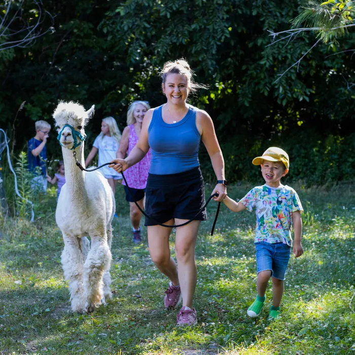
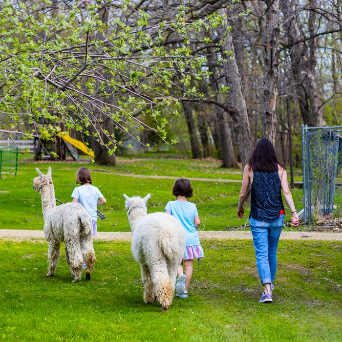
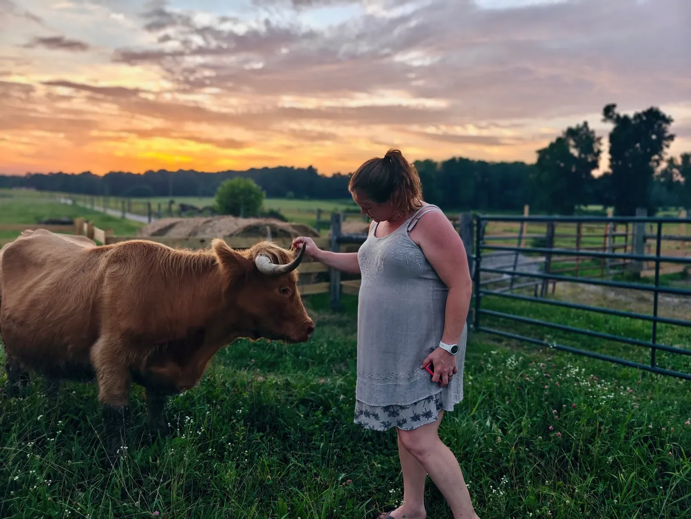

Meet the family, walk the working farm
Come to Tapestry Acres in Monroe, Tennessee for an unhurried alpaca experience, Highland cattle, a practical farm stay, and a shop full of useful fiber.
110 acres · Upper Cumberland Valley · real farm, real animals
Plan your visit
Experiences
Share a slow farm morning, walk an alpaca, or book a private tour.
Explore experiences →Shop
Bring home yarn, alpaca goods, and useful finds from the farm.
Visit the shop →Meet the Animals
Get to know the animals and personalities that make this place home.
Meet the animals →RV Rentals
Stay on the farm or have a fully set-up motorhome delivered nearby.
Plan a stay →
A working morning
Come for the animals. Leave with a clearer day.
Walk at the pace of the herd, ask the practical questions, and let the farm set the rhythm. Named animals, useful fiber, and a place to stay all meet on the same 110-acre farm.
Meet the herdFeatured experiences
Start with Coffee with the Cows, an alpaca walk, or a private guided farm tour.
See the full list on the experiences page.
From the farm shop
Browse socks, hand-dyed yarn, roving, gloves, and more from the full farm store.
Browse everything in the farm shop.

Reviews and where to find us
Our story
Tapestry Acres is a family farm run by Dale and Tari Maxfield. It started as W Oaks Alpacas — alpaca pop-up shops around Prior Lake, Minnesota, beginning in 2006. In 2023 the family relocated to 110 acres in Tennessee's Upper Cumberland Valley and opened Tapestry Acres: alpacas, Highland cattle, goats, pigs, and more, alongside a working farm store and overnight farm-stays.

Gift certificates
Give the farm — an alpaca experience, an adoption, or an adoption with fiber.
When we are open
Visits are bookable March 1 to June 30 and September 1 to December 31, between 10:00 a.m. and 5:00 p.m. Central. Outside those months, email us about a private visit.
Closed-toe shoes anywhere on the farm.